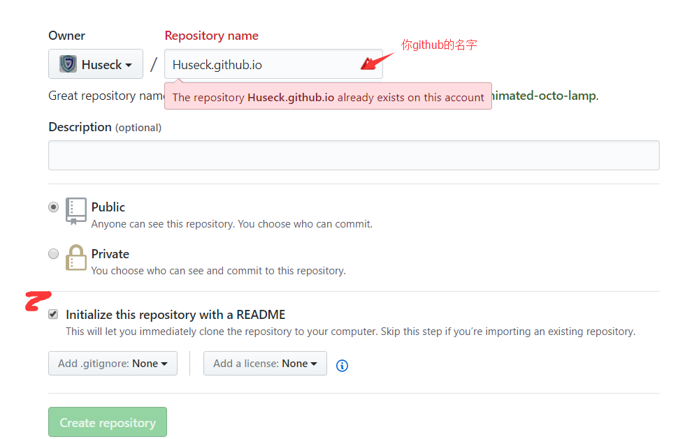

前言
搭建个人博客有两种方式
- 第一种
使用自己独立的VPS和域名
这种的方式就是可扩展的方式很多种，可以直接源码安装管理数据库等，比如安装typecho、WordPress等，如果是只是为了写博文就没有必要选择这种方式了，多花费买VPS的钱了。自行安装配置这里不再累述。 - 第二种
使用github pages +hexo+域名的方式。
这种方式个人感觉比较nice。
安装的过程如下
前期准备 - Step1
先安装git nodejs 的基础上安装 hexo1
#npm install hexo-cli -g
如果npm安装不了需要使用淘宝的cnpm来代替1
2
3#npm install -g cnpm --registry=https://registry.npm.taobao.org
#cnpm install hexo-cli -g
#hexo -v //查看一下是否安装成功
- Step2
然后创建一个hexo1
2
3
4
5
6
7
8
9
10
11
12
13
14
15
16
17
18
19
20#cnpm install
或者
#npm install
#hexo init hexo //这里如果出现不能连接到git上需要使用一下代理 当前目录下创建一个hexo文件里面是hexo源文件
#git config --global https.proxy http://127.0.0.1:1080
#git config --global https.proxy https://127.0.0.1:1080
然后进入hexo文件下运行
#cd hexo
#cnpm install hexo --save
或者
#npm install hexo --save
#sudo npm install --unsafe-perm --verbose -g hexo 如果运行错误，可以执行此命令
本地测试运行hexo
#hexo g
#hexo s
出现
INFO Start processing
INFO Hexo is running at http://localhost:4000/. Press Ctrl+C to stop.
说明就成功了
创建github pages
到这里我们已经本地能运行hexo了，配置好选择好自己喜欢的主题
我们创建一个github pages
- Step1
点击
Create a new repository

名字一定要填写你github的名字
然后创建选择主题
之后访问huseck.github.io，访问自己的 Step2
使用git 来管理github的仓库
前期需要配置ssh-key 连接到github上1
2
3
4
5
6#ssh-keygen –t rsa –C “邮箱地址” //可以什么都不用填写 把id_rsa.pub 的内容复制到github setting 中的ssh-keys 中
然后git 配置
#git config –global user.name “用户名”
#git config –global user.email “邮箱”
然后连接测试
ssh –T git@github.comStep3 创建分支管理
新创建的仓库的默认分支(branches)是master 我们需要再创建一个存放hexo源文件的分支
新建一个空的文件1
2
3
4
5
6#git init
#git remote add origin https://github.com/Huseck/huseck.github.io.git
#git pull origin master
#git branch hexo //创建分支
#git checkout hexo
#git push origin hexo
查看一个github上仓库会发现有两个分支了
需要向hexo分支上传hexo的源文件1
2
3
4
5
6#git remote add origin https://github.com/github名.github.io.git
#git pull origin hexo
#git checkout hexo
#git add . //当前有hexo源文件的目录下
#git commit -m "hexo blog"
#git push origin hexo
上传成功
然后我们上传静态文件到master分支1
2
3
4
5
6
7
8
9
10
11
12
13
14
15
16
17#hexo g
#hexo s //会生成public 目录里面就是我们上传到master分支上的文件
//有两种方式上传1.是#hexo d 需要配置
在hexo 源文件的根目录_config.yml最后添加
deploy:
type: git
repo: https://github.com/Huseck/huseck.github.io.git
name: Huseck
email: 504038236@qq.com
branch: master
//第二种方式直接进入public文件下，需要执行git的拉取选择仓库等命令比较繁琐
#git init
#git remote add origin https://github.com/github名.github.io.git
#git pull origin master
#git add .
#git commit -m "public file"
#git push origin master
多电脑进行博文编写
如果我们的博客不是一个人在发布博文，或者换电脑了
想实现这样的思路就是
创建两个分支 一个装hexo生成的静态网页 一个装hexo源文件
在其他电脑上发布博客的话思路就是克隆装hexo源文件的仓库，本地编写好.md文件，然后hexo g 编译成最新的静态网页，之后hexo d 发布到装有静态网页的仓库中，就实现了最新的博文发布了，最后，最后就是把hexo源文件编写的.md博文上传到hexo源文件的仓库中，避免其他人使用的时候把之前生成的静态博文冲突掉。
注：一定需要保持hexo源文件的.md文件和生成的静态文件内容保持一致
具体过程
- 确认电脑上有git 和nodejs环境
首先是已经在github上添加ssh-keys了
然后本目录下新建一个空的目录1
2
3
4
5
6
7
8
9
10
11
12
13
14
15
16
17
18
19
20#git init
#git remote add origin https://github.com/Huseck/huseck.github.io.git
#git pull origin hexo
#git checkout hexo
#cnpm install 或者 npm install
#cnpm install hexo --save
#hexo new "博文名称"
#hexo g
#hexo s //测试是否内容更新
#hexo clean //清理一下缓存
#hexo g
#hexo s
#hexo d //上传到master中
另一种方法就是
先添加远程仓库，然后克隆分支，更新内容。
git clone -b hexo git@github.com:Huseck/huseck.github.io.git
安装 npm install
npm install hexo --save
然后运行 hexo s 调试
最后push 到分支
注如果出现错误
需要1
git config --global push.default matching
消除此警告并采用新的设置值，输入：1
git config --global push.default simple
然后重新init remote 等操作需要从头开始了

Powered by HyperComments